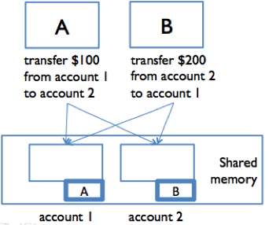

This is an easy-to-understand note for Reading 21: Locks and Synchronization.
Exercises are very important, do not skip them. On the contrary, you can read this article in an exercises-driven way if you just want to review the key ideas.
Recall three key properties of a good software:
| Safety from bugs | Easy to understand | Ready for change |
|---|---|---|
| Correct today and correct in the unknown future. | Communicating clearly with future programmers, including future you. | Designed to accommodate change without rewriting. |
We will learn:
- how a lock is used
- recognize and prevent deadlock
- the monitor pattern
Recall the four strategies for making code safe for concurrency:
- Confinement. Don’t share the variable between threads.
- Immutability. Make the shared data immutable.
- Threadsafe data type: Encapsulate the shared data in an existing threadsafe data type that does the coordination for you.
- Synchronization: Use synchronization to keep the threads from accessing the variable at the same time.
Synchronization
Correctness should not depend on timing.
A way for concurrency modules that share memory to synchronize with each other.
Locks are one synchronization technique.
Lock: an abstraction that allows at most one thread to own it at a time.
Thread A Holding a lock: A tells other threads: “I’m working with it, don’t touch it right now.”
Locks have two operations:
-
acquire
allows a thread to take ownership of a lock. If a thread tries to acquire a lock currently owned by another thread, it blocks until the other thread releases the lock. At that point, it will contend with any other threads that are trying to acquire the lock. At most one thread can own the lock at a time. -
release
relinquishes ownership of the lock, allowing another thread to take ownership of it.
Using a lock also tells the compiler and processor that you’re using shared memory concurrently, so that registers and caches will be flushed out to shared storage. This avoids the problem of reordering, ensuring that the owner of a lock is always looking at up-to-date data.
Blocking means, in general, that a thread waits (without doing further work) until an event occurs.
Bank account example
For concurrent reads and writes to the account balances, we can add a lock that protects each bank account. Now, before they can access or update an account balance, cash machines must first acquire the lock on that account.

Both A and B are trying to access account 1. Suppose B acquires the lock first. Then A must wait to read or write the balance until B finishes and releases the lock. This ensures that A and B are synchronized, but another cash machine C is able to run independently on a different account (because that account is protected by a different lock).
Deadlock
Deadlock is a situation where two threads are waiting for each other — and hence neither can make progress.
A and B each acquire the lock on their respective “from” account: A acquires the lock on account 1, and B acquires the lock on account 2. Now, each must acquire the lock on their “to” account: so A is waiting for B to release the account 2 lock, and B is waiting for A to release the account 1 lock. Stalemate! A and B are frozen in a “deadly embrace,” and accounts are locked up.
A deadlock may involve more than two modules: the signal feature of deadlock is a cycle of dependencies, e.g. A is waiting for B which is waiting for C which is waiting for A. None of them can make progress.
You can also have deadlock without using any locks. For example, a message-passing system can experience deadlock when message buffers fill up. If a client fills up the server’s buffer with requests, and then blocks waiting to add another request, the server may then fill up the client’s buffer with results and then block itself. So the client is waiting for the server, and the server waiting for the client, and neither can make progress until the other one does. Again, deadlock ensues.
Developing a threadsafe abstract data type
All code for this example on Github: edit buffer example
Multi-user editor like Google Docs that allows multiple people to connect to it and edit it at the same time.
We’ll need a mutable datatype to represent the text in the document. Here’s the interface; basically it represents a string insert and delete operations.
/** An EditBuffer represents a threadsafe mutable |
- A very simple rep for this datatype would just be a string:
public class SimpleBuffer implements EditBuffer { |
Downside: We have to copy the entire string into a new string every time we do an insert or delete.
- Another rep: a character array, with space at the end.
Downside: If the user is typing at the beginning of the document, then we’re copying the entire document with every keystroke.
- A more interesting rep called gap buffer: a character array with extra space in it, but the extra space is a gap that can appear anywhere in the buffer. Whenever an
insertordeleteoperation needs to be done, the datatype first moves the gap to the location of the operation, and then does theinsertordelete.
-
If the gap is already there, then nothing needs to be copied — an insert just consumes part of the gap, and a delete just enlarges the gap!
-
Gap buffers are particularly well-suited to representing a string that is being edited by a user with a cursor, since inserts and deletes tend to be focused around the cursor, so the gap rarely moves.
/** GapBuffer is a non-threadsafe EditBuffer that is optimized |
In a multi-user scenario, we’d want multiple gaps, one for each user’s cursor, but we’ll use a single gap for now.
Step to develop the datatype
Recall our recipe for designing and implementing an ADT:
- Specify.
Define the operations (method signatures and specs). We did that in the EditBuffer interface.
- Test.
Develop test cases for the operations. EditBuffer includes a testing strategy based on partitioning the parameter space of the operations.
- Rep.
a. Implement a simple, brute-force rep first.
`SimpleBuffer` -> `GapBuffer`
<details>It’s easier to write, you’re more likely to get it right, and it will validate your test cases and your specification so you can fix problems in them before you move on to the harder implementation. This is why we implemented <code>SimpleBuffer</code> before moving on to <code>GapBuffer</code>. Don’t throw away your simple version, either — keep it around so that you have something to test and compare against in case things go wrong with the more complex one.</details>
b. Write down the rep invariant and abstraction function, and implement checkRrep().
<details><code>checkRep()</code> asserts the rep invariant at the end of every constructor, producer, and mutator method. (It’s typically not necessary to call it at the end of an observer, since the rep hasn’t changed.) In fact, assertions can be very useful for testing complex implementations, so it’s not a bad idea to also assert the postcondition at the end of a complex method. You’ll see an example of this in <code>GapBuffer</coode>.<code>moveGap()</code> in the code with this reading.</details>
Consider single-threaded at first, then Multithreaded clients should be in the back of our minds at all times while we’re writing specs and choosing reps (we’ll see later that careful choice of operations may be necessary to avoid race conditions in the clients of your datatype). But get it working, and thoroughly tested, in a sequential, single-threaded environment first.
- synchronize.
- Iterate.
Locking
In Java, every object has a lock implicitly associated with it.
// Even a humble Object has a lock |
Java’s intrinsic locks cannot be obtained by calling acquire and release. Instead, use the ** synchronized** statement to acquire the lock for the duration of a statement block:
synchronized (lock) { // thread blocks here until lock is free |
Synchronized regions like this provide mutual exclusion.
Locks guard access to data
You might think that simply owning an object’s lock would prevent other threads from accessing that object. That is not the case. Acquiring the lock associated with object obj using
synchronized (obj) { ... } |
in thread t does one thing and one thing only: prevents other threads from entering a synchronized(obj) block, until thread t finishes its synchronized block. That’s it.
Monitor pattern
The most convenient lock is the object instance itself, i.e. this.
/** SimpleBuffer is a threadsafe EditBuffer with a simple rep. */ |
Every method that touches the rep must be guarded with the lock — even apparently small and trivial ones like length() and toString(). This is because reads must be guarded as well as writes — if reads are left unguarded, then they may be able to see the rep in a partially-modified state.
This approach is called the monitor pattern. A monitor is a class whose methods are mutually exclusive, so that only one thread can be inside an instance of the class at a time.
If you add the keyword synchronized to a method signature, then Java will act as if you wrote synchronized (this) around the method body. So the code below is an equivalent way to implement the synchronized SimpleBuffer:
/** SimpleBuffer is a threadsafe EditBuffer with a simple rep. */ |
Notice that the SimpleBuffer constructor doesn’t have a synchronized keyword. Java actually forbids it, syntactically, because an object under construction is expected to be confined to a single thread until it has returned from its constructor. So synchronizing constructors should be unnecessary.
Exercises
Synchronizing with locks
If thread B tries to acquire a lock currently held by thread A:
What happens to thread A?
What happens to thread B?
This list is mine, all mine
Suppose list is an instance of ArrayList<String>.
What is true while A is in a synchronized (list) { ... } block?
no other thread can acquire the lock on `list`.
OK fine but this synchronized List is totally mine
Suppose sharedList is a List returned by Collections.synchronizedList.
It is now safe to use sharedList from multiple threads without acquiring any locks… except! Which of the following would require a synchronized(sharedList) { ... } block?
call isEmpty
call add
iterate over the list
call isEmpty, if it returns false, call remove(0)
no
yes, specification of list
yes, in between our call to isEmpty and remove, someone else could have emptied the list!
I heard you like locks so I acquired your lock so you can lock while you acquire
synchronized (obj) { |
On the line “uh oh, deadlock?”, do we experience deadlock?
If we don’t deadlock, on the line “do we own the lock on obj”, does the thread own the lock on obj?
Thread safety argument with synchronization
Thread safety argument of SimpleBuffer:
/** SimpleBuffer is a threadsafe EditBuffer with a simple rep. */ |
Note that the encapsulation of the class, the absence of rep exposure, is very important for making this argument. If text were public:
public String text; |
then clients outside SimpleBuffer would be able to read and write it without knowing that they should first acquire the lock, and SimpleBuffer would no longer be threadsafe.
Locking discipline
A locking discipline is a strategy for ensuring that synchronized code is threadsafe. We must satisfy two conditions:
-
Every shared mutable variable must be guarded by some lock. The data may not be read or written except inside a synchronized block that acquires that lock.
-
If an invariant involves multiple shared mutable variables (which might even be in different objects), then all the variables involved must be guarded by the same lock. Once a thread acquires the lock, the invariant must be reestablished before releasing the lock.
The monitor pattern as used here satisfies both rules. All the shared mutable data in the rep — which the rep invariant depends on — are guarded by the same lock.
Atomic operations
Consider a find-and-replace operation on the EditBuffer datatype:
/** Modifies buf by replacing the first occurrence of s with t. |
Even though each call of buf individually is atomic, the findReplace method as a whole is not threadsafe, because other threads might mutate the buffer while findReplace is working, causing it to delete the wrong region or put the replacement back in the wrong place.
To prevent this, findReplace needs to synchronize with all other clients of buf.
Giving clients access to a lock
/** An EditBuffer represents a threadsafe mutable string of characters |
public static boolean findReplace(EditBuffer buf, String s, String t) { |
The effect of this is to enlarge the synchronization region that the monitor pattern already put around the individual toString, delete, and insert methods, into a single atomic region that ensures that all three methods are executed without interference from other threads.
Sprinkling synchronized everywhere?
No.
- Synchronization imposes a large cost on your program.
- It minimizes the scope of access to your lock. Adding
synchronizedto every method means that your lock is the object itself, and every client with a reference to your object automatically has a reference to your lock, that it can acquire and release at will. - It’s not sufficient to sprinkle
synchronizedeverywhere.
Suppose we had tried to solve findReplace’s synchronization problem simply by dropping synchronized onto its declaration:
public static synchronized boolean findReplace(EditBuffer buf, ...) { |
As a result, only one thread could call findReplace at a time — even if other threads want to operate on different buffers, which should be safe, they’d still be blocked until the single lock was free. So we’d suffer a significant loss in performance.
Worse, however, it wouldn’t provide useful protection, because other code that touches the document probably wouldn’t be acquiring the same lock. It wouldn’t actually eliminate our race conditions.
The synchronized keyword is not a panacea(works for everything). Thread safety requires a discipline — using confinement, immutability, or locks to protect shared data. And that discipline needs to be written down, or maintainers won’t know what it is.
Designing a datatype for concurrency
For example, it might be better to pair EditBuffer with a Position datatype representing a cursor position in the buffer, or even a Selection datatype representing a selected range. Once obtained, a Position could hold its location in the text against the wash of insertions and deletions around it, until the client was ready to use that Position. If some other thread deleted all the text around the Position, then the Position would be able to inform a subsequent client about what had happened (perhaps with an exception), and allow the client to decide what to do. These kinds of considerations come into play when designing a datatype for concurrency.
The ConcurrentMap interface(extends Map) in Java
map.putIfAbsent(key,value) is an atomic version of
if ( ! map.containsKey(key)) map.put(key, value);
map.replace(key, value) is an atomic version of
if (map.containsKey(key)) map.put(key, value);
Deadlock rears its ugly head(means to present itself and force people to deal with it)
Threads need to wait. Blocking raises the possibility of deadlock.
Suppose we’re modeling the social network of a series of books:
public class Wizard { |
Like Facebook, this social network is bidirectional: if x is friends with y, then y is friends with x. The friend() and defriend() methods enforce that invariant by modifying the reps of both objects, which because they use the monitor pattern means acquiring the locks to both objects as well.
A couple of wizards:
Wizard harry = new Wizard("Harry Potter"); |
When two independent threads are repeatedly running:
// thread A // thread B |
We will deadlock very rapidly. Here’s why. Suppose thread A is about to execute harry.friend(snape), and thread B is about to execute snape.friend(harry)
- Thread A acquires the lock on
harry(because thefriendmethod is synchronized). - Then thread B acquires the lock on
snape(for the same reason). - They both update their individual reps independently, and then try to call
friend()on the other object — which requires them to acquire the lock on the other object.
So A is holding Harry and waiting for Snape, and B is holding Snape and waiting for Harry. Both threads are stuck in friend(), so neither one will ever manage to exit the synchronized region and release the lock to the other. This is a classic deadly embrace. The program simply stops.
Notice that it is possible for thread A and thread B to interleave such that deadlock does not occur: perhaps thread A acquires and releases both locks before thread B has enough time to acquire the first one. If the locks involved in a deadlock are also involved in a race condition — and very often they are — then the deadlock will be just as difficult to reproduce or debug.
Deadlock solution 1: lock ordering
public void friend(Wizard that) { |
In our social network example, we might always acquire the locks on the Wizard objects in alphabetical order by the wizard’s name. Since thread A and thread B are both going to need the locks for Harry and Snape, they would both acquire them in that order: Harry’s lock first, then Snape’s. If thread A gets Harry’s lock before B does, it will also get Snape’s lock before B does, because B can’t proceed until A releases Harry’s lock again. The ordering on the locks forces an ordering on the threads acquiring them, so there’s no way to produce a cycle in the waiting-for graph.
Note: Order the locks alphabetically by the person’s name would work fine for this example, but it wouldn’t work in a real-life social network, because they might have the same name. In real life, we can use their unique national identification number.
Drawbacks:
- It’s not modular(module’s adj) — the code has to know about all the locks(
this,that) in the system, or at least in its subsystem. - It may be difficult or impossible for the code to know exactly which of those locks it will need before it even acquires the first one. It may need to do some computation to figure it out. Think about doing a depth-first search on the social network graph, for example — how would you know which nodes need to be locked, before you’ve even started looking for them?
Deadlock solution 2: coarse-grained locking
Use a single lock to guard many object instances, or even a whole subsystem of a program.
public class Wizard { |
All Wizards belong to a Castle, and we just use that Castleobject’s lock to synchronize.
Coarse-grained locks can have a significant performance penalty. If you guard a large pile of mutable data with a single lock, then you’re giving up the ability to access any of that data concurrently. In the worst case, having a single lock protecting everything, your program might be essentially sequential — only one thread is allowed to make progress at a time.
Exercises
Deadlock
In the code below three threads 1, 2, and 3 are trying to acquire locks on objects alpha, beta, and gamma.
Thread 1 |
Thread 2 |
Thread 3 |
|
|---|---|---|---|
|
This system is susceptible to deadlock.
For each of the scenarios below, determine whether the system is in deadlock if the threads are currently on the indicated lines of code.
Scenario A
Thread 1 inside using alpha
Thread 2 blocked on synchronized (alpha)
Thread 3 finished
Scenario B
Thread 1 finished
Thread 2 blocked on synchronized (beta)
Thread 3 blocked on 2nd synchronized (gamma)
Scenario C
Thread 1 running synchronized (beta)
Thread 2 blocked on synchronized (gamma)
Thread 3 blocked on 1st synchronized (gamma)
Scenario D
Thread 1 blocked on synchronized (beta)
Thread 2 finished
Thread 3 blocked on 2nd synchronized (gamma)
Locked out
Examine the code again.
In the previous problem, we saw deadlocks involving beta and gamma.
What about alpha?
alphaIn order to encounter deadlock, threads must try to acquire locks in different orders, creating a cycle in the graph of who-is-waiting-for-who.
Concurrency in practice
Goals
Safety
Does the concurrent program satisfy its invariants and its specifications? Races in accessing mutable data threaten safety. Safety asks the question: can you prove that some bad thing never happens?
Liveness
Does the program keep running and eventually do what you want, or does it get stuck somewhere waiting forever for events that will never happen? Can you prove that some good thing eventually happens?
Fairness
Strategies
Library data structures
Either use no synchronization (to offer high performance to single-threaded clients, while leaving it to multithreaded clients to add locking on top) or the monitor pattern.
Mutable data structures with many parts
Typically use either coarse-grained locking or thread confinement. Most graphical user interface toolkits follow one of these approaches, because a graphical user interface is basically a big mutable tree of mutable objects. Java Swing, the graphical user interface toolkit, uses thread confinement. Only a single dedicated thread is allowed to access Swing’s tree. Other threads have to pass messages to that dedicated thread in order to access the tree.
Search
Often uses immutable datatypes.
Operating systems
Often use fine-grained locks in order to get high performance, and use lock ordering to deal with deadlock problems.
Database systems are widely used for distributed client/server systems like web applications. Databases avoid race conditions using transactions, which are similar to synchronized regions in that their effects are atomic, but they don’t have to acquire locks, though a transaction may fail and be rolled back if it turns out that a race occurred. Databases can also manage locks, and handle locking order automatically. For more about how to use databases in system design, 6.170 Software Studio is strongly recommended; for more about how databases work on the inside, take 6.814 Database Systems.
And if you’re interested in the performance of concurrent programs — since performance is often one of the reasons we add concurrency to a system in the first place — then 6.172 Performance Engineering is the course for you.
Summary
- Safety from bugs
- Easy to understand
- Ready to change
Heisenbugs will skitter away as soon as you try to pin them down, so debugging simply isn’t an effective way to achieve correct threadsafe code. And threads can interleave their operations in so many different ways that you will never be able to test even a small fraction of all possible executions.
-
Make thread safety arguments about your datatypes, and document them in the code.
-
Acquiring a lock allows a thread to have exclusive access to the data guarded by that lock, forcing other threads to block — as long as those threads are also trying to acquire that same lock.
-
The monitor pattern guards the rep of a datatype with a single lock that is acquired by every method.
-
Blocking caused by acquiring multiple locks creates the possibility of deadlock.